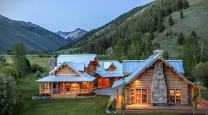
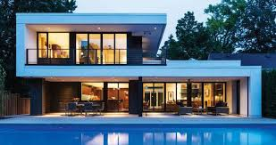

Þehirlerin yaný baþýnda lüks evler, ya da kýrsalda bir çiftlik evi, ya da þehir içinde Victoria döneminden kalma büyük teraslý bir ev, yaþanabilecek ev çeþidi o kadar çok ki… Ev demek sadece baþýmýzý sokacak bir delik deðil, bir yuva, çocuklarýmýzý yetiþtireceðimiz ve kiþiliðimizi ve zevklerimizi yansýtacak bir yer demektir. Bunun yanýnda güzel anýlar biriktireceðimiz ve dinleneceðimiz bir mekandýr. Ýlk izlenim önemlidir. Bu yüzden evinizle insanlarý etkilemek istiyorsanýz evinizin dýþ görünüþüne önem gösterin. Evin içi kadar dýþý ve bahçesine de bakým yapýn. Yakýn aileniz dýþýnda misafirleriniz geldiðinde evinizin dýþýný görüp hemen bir yuva hissine kapýlacak ve ev sahiplerinin karakterleri hakkýnda fikirleri olacaktýr. Evler zevklerimizi yansýttýðý kadar ayný zamanda fonksiyonel ve pratik de olmalýlar. Ünlü Alman tasarým ekolü Bauhaus'un temsilcilerinden Walter Gropius'un dediði gibi form daima iþlevselliði takip eder. Ýþlevsel bir oda ya da bir mobilya parçasý pratik bir amaç gütmenin yaný sýra ayný zamanda estetik de olabilir.
